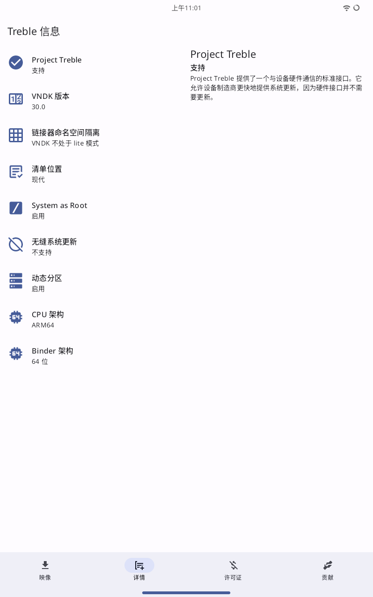

刷 GSI 系统 ———— 没有底层刷机包的备用方案¶
引言¶
对于 Lenovo 的平板来说，直接支持的 底层刷机包（stock rom） 很少，或者说根本就没有，因为 Lenovo 平板也算是比较 冷门 机型了
所以目前通过设备对 GSI 的支持进行换系统、刷机是最简单的
GSI 初步认识¶
什么是 GSI？¶
GSI 是 Gobal System Image 也就是 通用系统镜像，是一种神奇的 Android 通用镜像，ta 可以忽略 “是否兼容硬件” 这种疑问进行更换系统，这无疑是很好的；当然，使用 ta 也将可能会面临着硬件调用不合理导致的一些问题，如：续航变短、手势跟不上、屏幕亮度奇怪等。但是，总比住原厂的“垃圾堆”里强吧
设备检查¶
检查您的设备是否支持 GSI ，可以使用 Treble Info 完成检查

如果检查结果如上图，恭喜您！您的设备支持 GSI，让我们进入下一步吧！
如果检查结果显示您的设备不支持 GSI ，那么您就可以到此结束了
寻找合适的 GSI 镜像¶
目前，我已经体验过三款 GSI 系统，分别为：
Dot OS 5, Lineage OS 18 & 19, PixelExpenrience Android 13
当然，你也可以在 这份清单 上寻找你喜欢的GSI镜像
我之前曾在 Dot OS 上过的“逍遥快活”，我个人认为 Dot OS 是这几款里面既有颜值又有可玩性的一个。但是 ta 也有一些缺陷，如：
- 对平板设备的支持虽然有，但很差
- 续航变短（估计是GApps的问题）
- 有时候会莫名其妙的卡顿
- 设备的红色指示灯一直常亮
请注意
TB-X306FC 这台设备不知道因为什么，部分 Android 13 的 GSI 刷入后会出现无法连接网络的情况，所以建议选择 Android 11, 12, 12.1 的 GSI （Android 14 的会出现耗电高，温度高的情况）
刷入¶
由于没有一个标准的、官方的 TWRP 对其支持，所以只能通过最原始的手段进行刷入，也就是通过 fastbootd （不是 fastboot ，Android 从 10 就开始弃用 fastboot 转而使用 fastbootd ）来刷写系统
其实我本人包括一些 XDA 上的大佬曾经为这部设备构建过这
TWRP，只不过有些功能是损坏的
FastbootD & Fastboot¶
这两者是使用方法相似但是可操控性不一样的两种模式，是为让 Android 设备更加安全才这样决定的
FastbootD¶
这项模式在 Android 10 之前是不存在的，这是一个基于 recovery 、专门用于进行刷写 super 分区中内容的 fastboot 模式，如要进入此模式，只能将设备先重启至 recovery 模式下，挂载 system 分区(可选)后选择 fastboot 模式 (不是 bootloader 模式)进行进入
此模式兼容所有 fastboot 的命令
Fastboot¶
这项模式仅在早期旧版 Android 设备中不存在，正常情况下都是存在的，用于刷写所有分区(Android 10之前的设备)、除 super 分区包含的分区内容(Android 10 之后的设备)，如果要进入此模式，可以使用 ADB 命令进入
| Bash | |
|---|---|
开始刷入¶
将设备重启至 fastbootd 模式下并确保 system 分区已被挂载，在计算机的终端中键入以下命令
| Bash | |
|---|---|
然后等待提示 100% 完成后重启，这样，你的设备已经刷入了 GSI 系统